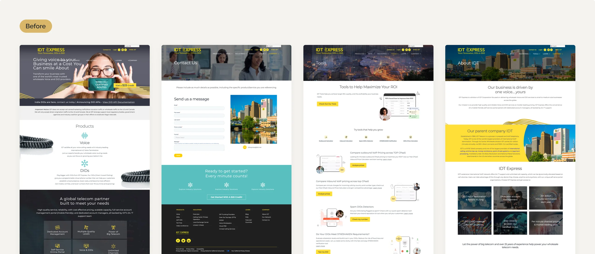
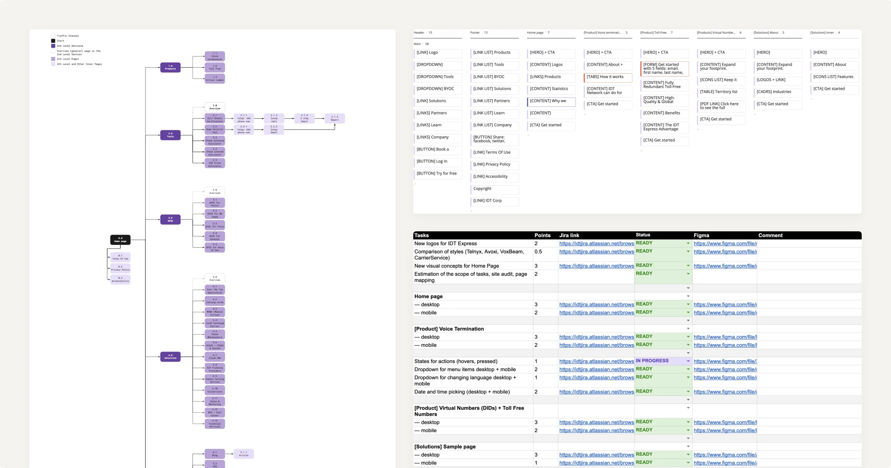
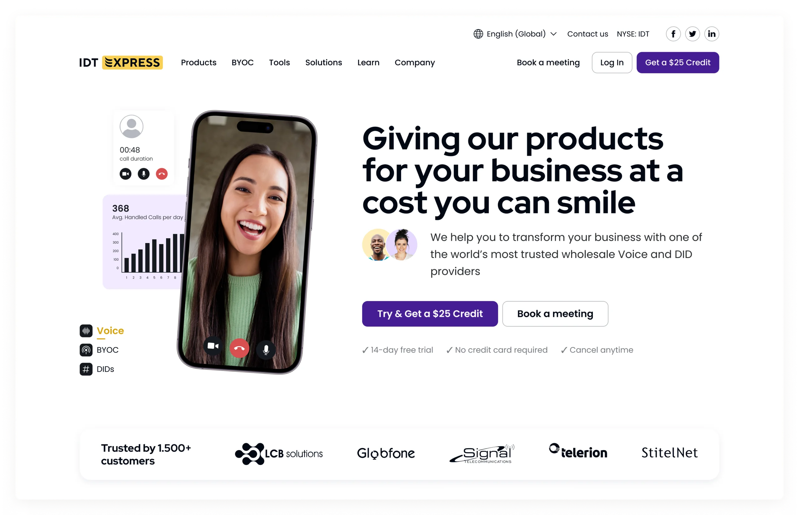
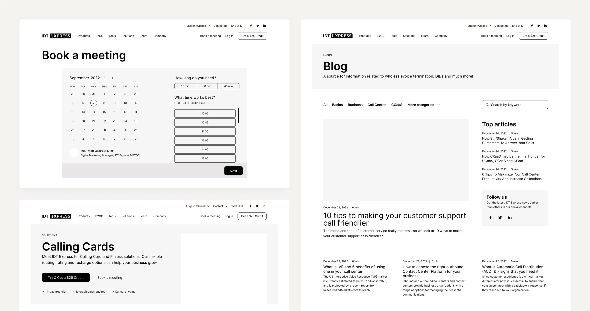
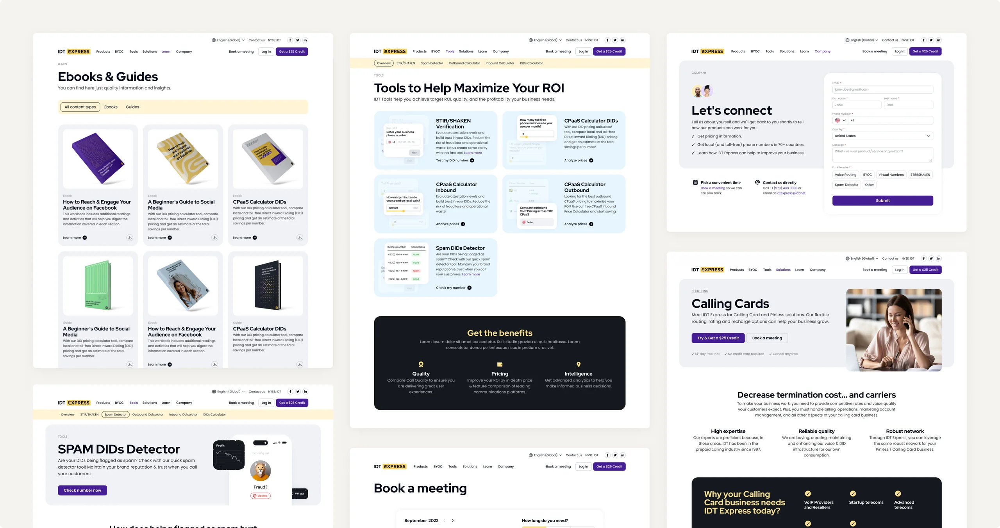
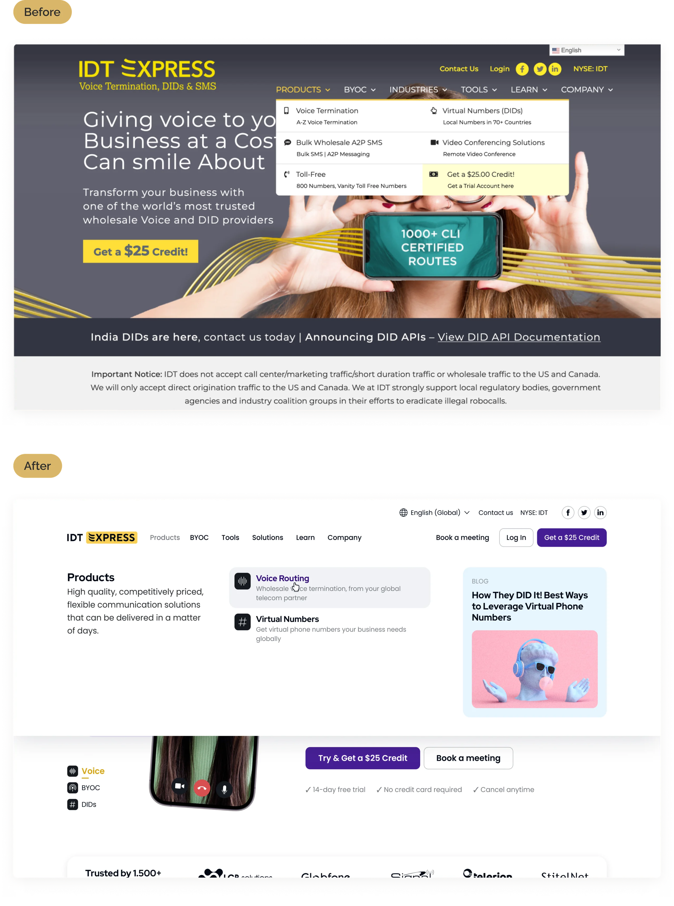
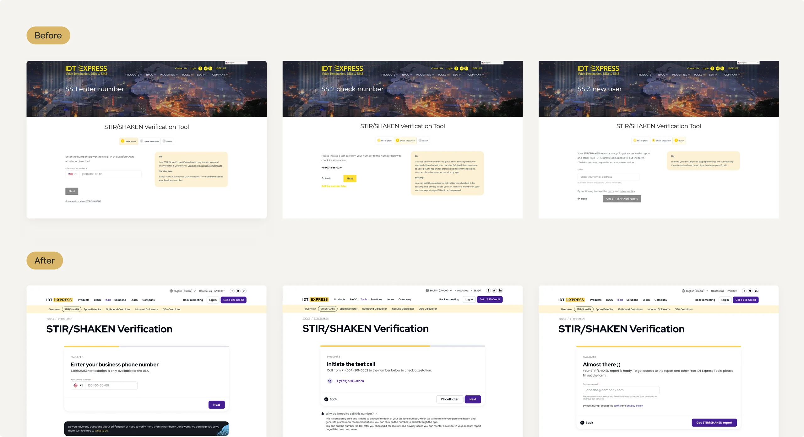
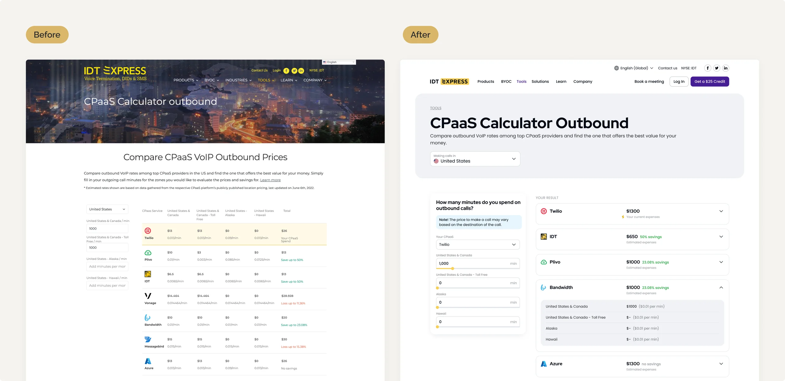
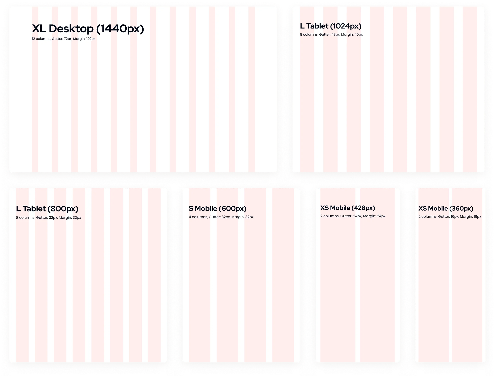
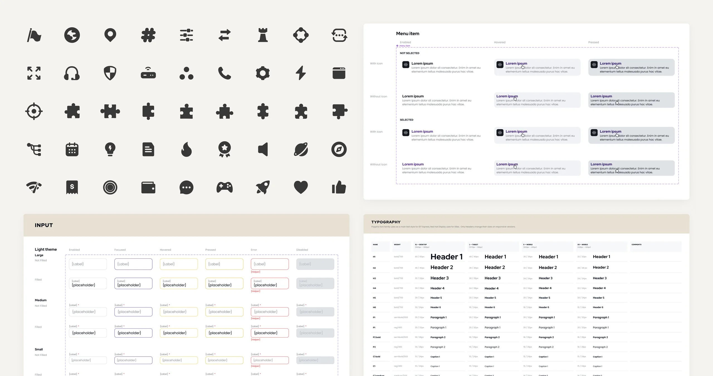

IDT Express website
IDT Express, a division of IDT Carrier Services, is a worldwide provider of wholesale voice and DID services to businesses. The company’s website aims to attract customers and promote its services.
Tasks
- Improve the visual design and usability of the website through a redesign.
- Transfer lead generation tools for detecting phone numbers to spam and call cost calculators from the existing Bring Your Own Carrier platform.

Problems
An interview with a stakeholder, studying GA, and conducting a UX/UI audit helped me identify critical issues on the website, which led to the service actively losing potential customers.
- The high bounce rate, which was 60% on desktop and 90% on mobile, is due to poor responsiveness.
- There were many content duplicates on the pages that do not reveal the value of the products.
- The pages had a slow load speed, causing users to see broken and uncoordinated content.
- The design was outdated and violates rules of composition, color, rhythm, and proximity of elements. As a result, the content is difficult to perceive.
- The main source of traffic to the site was paid ads campaigns in the blog. However, only 25% of these users stay on the site and navigate to other pages.
Redesign process
I prepared a new information architecture for the website, which included tools from BYOC. The business decided to combine these services.
Also I made a site mapping, built a roadmap table, and estimated the scope of work. The workflow was based on Kanban. During the design negotiation phase with the product owner, the developers were involved in discussions about feature implementation. Afterward, I documented all points by writing design specifications.

Logo & Concept
I updated the logo because the current one was outdated. The spacing between the letters was unequal and the lines of the sign were chaotic with unclear directions. Therefore, I created several new versions. The stakeholders decided to choose an improved version of the current logo in order to keep the service recognizable.

This version features a light, airy style with bright colors that convey friendliness and modernity. I chose Red Hat Display for headings — its geometric shapes draw attention — while Poppins was used for body text, adding a softer, more professional feel.
The color scheme is based on a Split Complementary palette, which helped highlight key elements and associate each product with a distinct color, making them easily recognizable for users.
#15191F
#451E94
#F9D054
#79C0F0
#31BD4B
Prototypes
During the redesign process, I created prototypes that sketched out the functionality or content to align our vision for the new pages I wanted to place after comparing them to the competition. This helped in discussions with stakeholders to determine what we should focus on and whether we had the time and capacity to implement a particular idea.

Page design
I created more than 80 pages for the IDT Express website, with each one adapted for tablet and mobile devices. Also I tested the developed designs and created a bug report.
Here are some of the screens for which the redesign was made.

Mega menu & Navigation
- I made the new menu more informative for the user, allowing them to quickly understand where they will be directed.
- Additionally, I added the ability to insert various banners to promote important company materials and events.
- The navigation has been completely revamped. I reduced the size of the logo to align with the main menu items. Additionally, I added “Log In” and “Get a $25 Credit” buttons as they are important actions on the site, and the entire focus is on the second floor of the menu.

Stir/Shaken verification & Spam Detector
Stir/Shaken is a widely-used tool for detecting robotic phone numbers. To enhance user experience, I made:
- To reduce confusion with the buttons, the progress bar has been simplified.
- The content was shortened by eliminating unnecessary tips that were not valuable and diverted users’ attention from the main action.
- A contact form banner implemented across all screens.

Inbound/Outbound calculators
Calculators that enable users to calculate call costs across various services have been updated with the option to select countries and change service providers.
- The progress bar was simplified so that users would be less confused with the buttons.
- Added sliders to the fields for entering minutes as an element of interactivity.
- The table has been simplified with a focus on the end cost. This updated version is highly adaptable and scalable, allowing for the inclusion of additional services in the future. It is also optimized for mobile devices, eliminating the need for excessive scrolling.

Responsiveness
I adapted all of the desktop designs for tablets and mobile devices to reduce bounce rate. Breakpoints were chosen based on Google Analytics, using the most popular resolutions: 1440px, 1024px, 800px, 600px, 428px, 360px.

Component system
While designing, I also assembled elements with all their states for the components system. This helped to speed up both the design and development processes.
